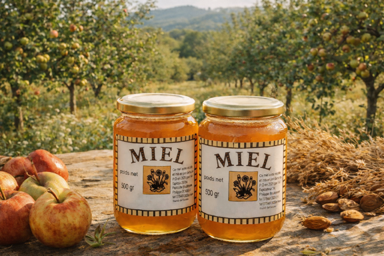

À Boulternère, dans le Roussillon. Des abeilles, un verger, et le rythme des saisons pour seule règle.

Je m'appelle Philippe Thorent. Je suis apiculteur et producteur à Boulternère, dans les Pyrénées-Orientales.
Je travaille avec les abeilles et le verger pour produire des miels artisanaux, du jus de pomme, de l'huile d'olive et d'autres produits fermiers. Tout part d'un même geste : accompagner ce que la nature donne, sans chercher à le forcer.
Je vends en direct, sur place, à celles et ceux qui veulent savoir d'où vient ce qu'ils mangent. C'est le sens de tout ça : des produits vrais, du Roussillon, faits par une personne que vous pouvez rencontrer.
Ici, rien n'est standardisé : chaque récolte dépend du climat, des floraisons, du vivant.

Les ruches sont posées au plus près des floraisons du Roussillon — romarin, garrigue, lavande, châtaignier. Au fil de l'année, les abeilles suivent ce que le paysage offre, et le miel change avec lui.
Le verger complète le rucher : pommes pour le jus, oliviers pour l'huile, amandiers, arbres fruitiers pour les confitures. Une petite exploitation, conduite à la main et à l'observation.
Je récolte quand c'est prêt, pas quand c'est pratique. Les quantités varient d'une année à l'autre — c'est normal, c'est vivant.
Pas d'intermédiaire : vous achetez au producteur, sur place. Le juste prix pour vous, le juste retour pour le travail fourni.
Une conduite douce des ruches, au service de la colonie avant tout. Un miel récolté sans précipitation.
Nos abeilles butinent aussi les vergers d'avocatiers cultivés par la famille, en Roussillon. Il en naît un miel rare et très local : le miel d'avocat, ambré et profond. Une même terre, une même exigence, deux savoir-faire qui se rejoignent.
Retrouvez-nous à la miellerie, à Boulternère — ou soyez prévenu avant chaque vente.